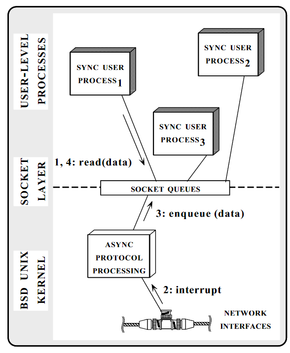
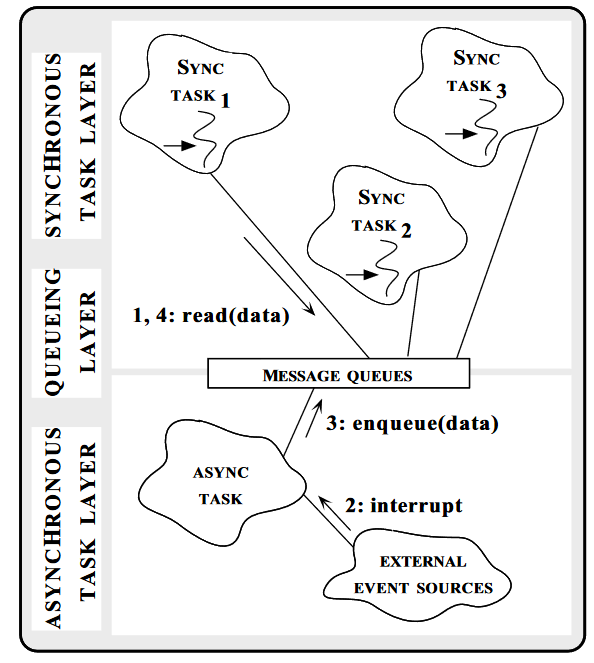

半同步/半异步（half-sync/half-async）的模式集成了同步IO模式和异步IO模型，既简化了并发系统的开发，又兼顾了效率。在这个并发设计模式的实现中，高级的任务使用同步IO模型，使开发者可以无太多的心智负担在并发编程中，底层的任务使用异步IO模型，这就提高了并发的效率。这个设计模式广泛的应用在操作系统的实现中，如UNIX、Mach，Windows等。
模式介绍
半同步/半异步的模式动机(Intent)就是从异步IO操作中解耦出同步IO操作，以便简化并发编程的效果，又不降低并发编程的效率。
下图是BSD UNIX网络子系统的架构图。BSD Unix内核协调异步通信设备（如网络适配器和终端）和操作系统上运行的应用程序之间的I/O。到达通信设备的数据包通过硬件中断异步化的中断处理器传送到操作系统内核。这些handler接收到这些来自设备包后会交给更高一层的协议去处理（IP、TCP等）。 合法的数据存在网络层的队列中。

操作系统会dispatch 用户进程去消费这些数据。用户进程调用read系统调用同步地从网络层读取数据，如果没有可用的数据，进程会sleep直到有新的数据到来。
在BSD架构中，对于设备的中断信号，内核异步地执行IO操作，而用户进程则同步地执行，这就是一个典型的半同步/半异步模式的实现。

当出现下面的场景的时候，你可能需要考虑采用半同步/半异步设计模式：
- 系统需要异步地处理外部事件
- 为每一个外部事件指定一个单独的控制线程来执行IO操作是低效的
- 如果同步IO,可以显著简化系统中的高级任务
如上图所示，这个设计模式包含一些参与者：
- Synchronous task layer： 如上面的例子中的用户进程
- Queueing layer：如上面的例子中的Socket层
- Asynchronous task layer：如上面的例子中的BSD UNIX 内核
- External event sources：如上面的例子中的网络设备
简单例子
在上一个并发设计模式Active Object, 我们介绍Active Object提供了异步访问接口，并且我们可以很容易地的把异步访问接口封装成同步调用接口(Call -> Do, 或者调用future.get等方式)。
一旦调用者采用同步的接口去调用Active Object，那么调用者、Active Object整个过程就组成了半同步/半异步的方式，也就是说，我们可以使用Active Object来实现半同步/半异步并发设计模式。
但是半同步/半异步设计模式中的半异步不一定非要Active Object来实现，你也可以使用消息模式来实现。这是这两种设计模式的联系和区别。
实际案例
Go中的网络库就是通过这个模式来实现的。
我们知道，Go大大简化了并发编程的复杂性，通过传统的我们所熟悉的同步的编程方式，我们就实现异步的编程方式。
为了高效地处理底层的网络IO，GO采用多路复用的方式（linux epoll/windows iocp/freebsd,darwin kqueue/solaris Event Port）处理网络IO事件，并且提供一致的同步的net.Conn对象来实现同步的调用。
所以很多同学曾经询问，怎么在Go中实现epoll方式处理网络IO呢？本身Go将这些异步事件(epoll等事件)处理封装在底层，你是无法直接调用的，并且Go的这种方式在大部分场景下已经很高效了，除非是在很特别的场景下，你才会去处理底层的IO，比如使用evio、epoller等库，但是使用起来是比较复杂的，而且风险性也很高。
以下是Go实现半同步/半异步模式相关的一些文件。
- runtime/netpoll.go
- runtime/netpoll_epoll.go
- runtime/proc.go
- net/fd_unix.go
- internal/poll/fd.go
- internal/poll/fd_poll_runtime.go
- internal/poll/fd_unix.go
这里不详细介绍Go网络层的具体实现了，国内一些开发者已经不断地在挖掘和介绍相关的内容了，你可以阅读参考资料中的一些链接去了解Go的具体实现。
基本上, runtime/netpoll.go中定义了一个通用的poll接口，如poll_runtime_pollOpen、poll_runtime_pollClose等。这是一个了不起的操作，一位内不同的操作系统有不同的实现(epoll/kqueue/iocp等)，而且它们的实现方式和方法也不统一，所以能封装成一个统一的模型已经很了不起了。针对不同的操作系统它有不同的文件和实现。
runtime/proc.go是Go调度器的核心，它会调度使用netpoll的goroutine。
net/fd_unix.go中定义的netFD是Go网络库的核心。它基本类似Active Object模式中的Proxy，对调用者来说它提供了同步的方法，内部使用统一poll模型实现多路复用。
我们可以观察Read方法，看看它是如果实现同步转异步的。
|
|
它的Read方法实际调用poll.FD的Read方法。poll.FD定义在internal/poll/fd.go中(针对unix类型的架构，实际在internal/poll/fd_unix.go中)。
|
|
这个方法可以从网络IO中读取p []byte字节数组，或者出错，或者没有数据。因为它是通过epoll (linux)实现的，操作系统可以将数据是否可读等epoll事件通知这个底层实现，这个底层实现可以检查特定的标志(err, syscall.EAGAIN, fd.pd.pollable())来决定是否等待读取。
整体来看，Go屏蔽了底层的异步处理，为各个操作系统平台提供了统一的同步调用接口，简化了网络处理的逻辑，同时还保留了多路复用的异步处理的性能。